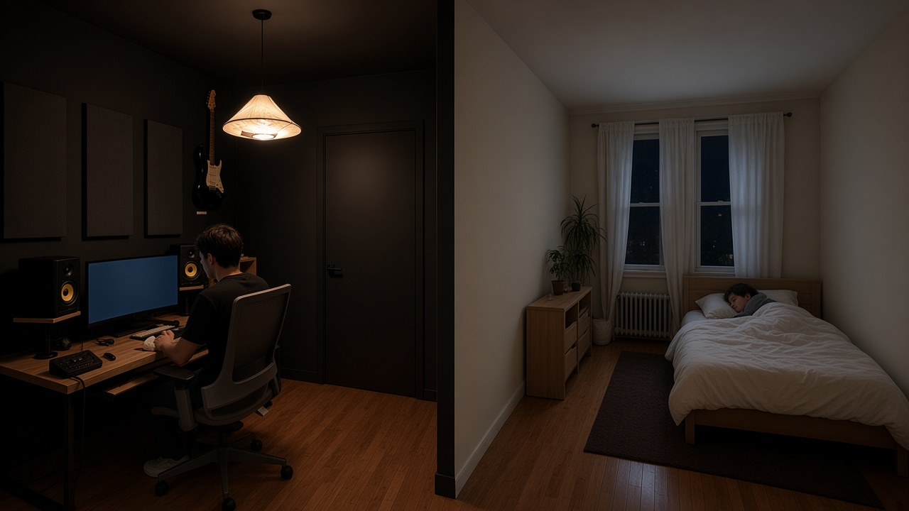
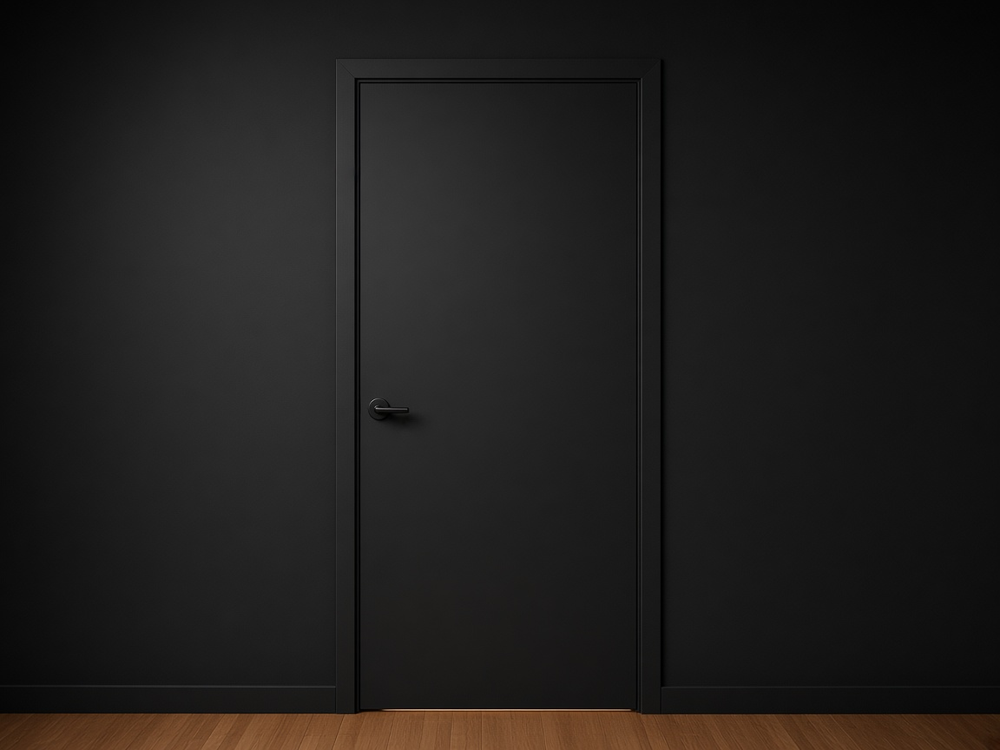
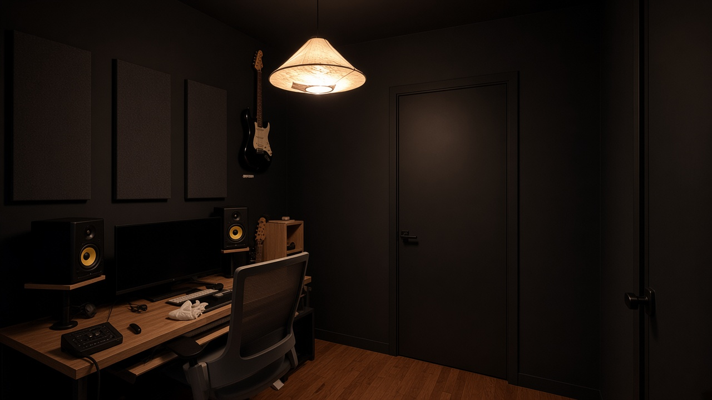
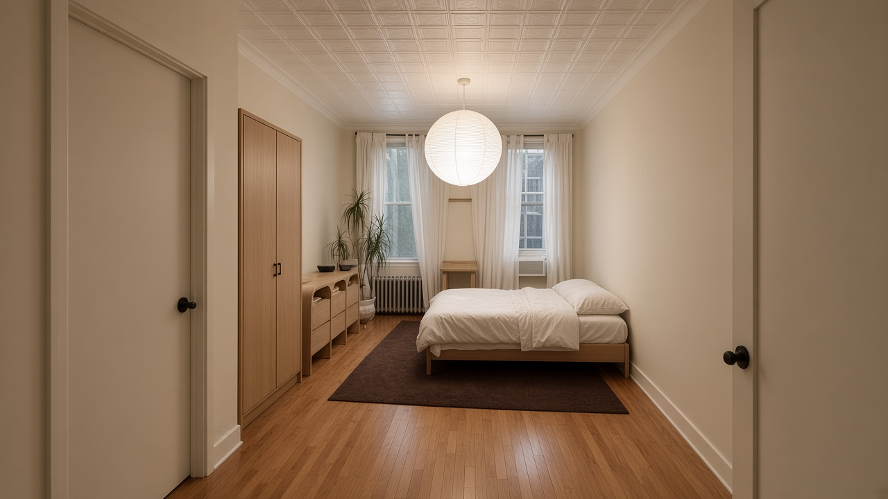

Problem now
- Wide open cutout = light and sound go straight to the bed
- Half curtain still leaks glare and conversation / monitors
- Open clothes rack keeps the desk feeling like bedroom overflow
Revised plan · Real wall, not a curtain
Build a stud wall with a solid acoustic door in that wide opening. Studio becomes a night booth. Bedroom stays dark and quiet for your partner. Enter the studio from the hall door — not through sleep.

A curtain only suggests privacy. Night work needs light block and sound block. Your layout already supports it: the studio has its own door to the brighter room, so the bedroom opening can become a true wall with a pass-through door — not the main entrance.
Fill the entire rectangular opening floor-to-ceiling. One solid door in the middle. Paint each face to match its room.

2×4 (or metal stud) frame tied into existing jamb/headers. Cavity filled with mineral wool or dense fiberglass. Double drywall on each face if you want stronger sound isolation.
Solid-core door (~32–36″), not hollow. Prefers a quiet latch. Add perimeter weatherstripping + automatic door bottom so light and sound don’t leak at the threshold.
Studio side: matte black (same booth). Bedroom side: cream to match sleep walls. Threshold continuous with hardwood + sealed undercut.
Door swings into the studio if bedroom furniture is tight; or into bedroom if studio clearance is better. Keep a clear 90° arc either way.
Same partition, two jobs.


Do the wall first. Everything else is finish work.
Measure width/height of the cutout. Check lease / building rules for adding a partition. Keep the hall-side studio door as the primary entry so the new door is secondary circulation, not a fire-trap.
Build a stud wall flush with the existing opening. Leave a rough opening for one solid door. Insulate the cavity. Hang drywall both faces; tape and finish clean.
Install solid-core door, compressible seals on all four sides, and a door sweep / automatic bottom. Test at night: lights on in studio, bedroom dark — no glow under the door.
Black studio / cream bedroom. Repair desk-wall scars; add three fabric panels. Move clothes into a closed wardrobe on the sleep side. Cable tray + warm bias light so the sealed booth feels intentional, not cave-like.
Small habits that make the wall worth building.
Wall first, cosmetics second.
| Priority | Item | Why |
|---|---|---|
| P0 | Studs, mineral wool, drywall, fasteners | Fill the opening as a real wall |
| P0 | Solid-core door + jamb | Hollow doors leak sound and feel temporary |
| P0 | Acoustic seal kit + door bottom | Stops light spill and speech leakage |
| P1 | Matte black + cream paint | Match each room face |
| P1 | 3× fabric acoustic panels | Sealed room needs absorption at the desk |
| P2 | Closed wardrobe | Clothes leave the studio sightline |
| P2 | Cable tray + warm bias LED | Night booth stays calm and usable |
This is the cutout the wall fills.